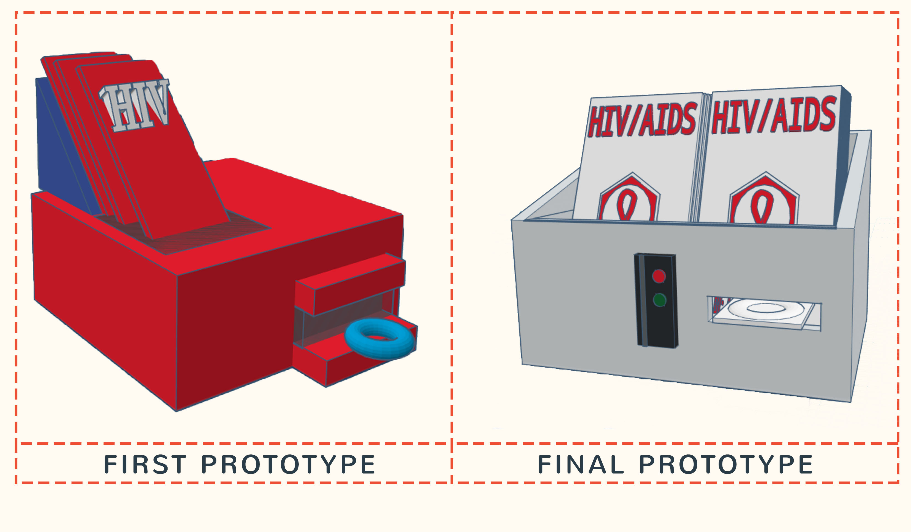

AIDS/HIV is a serious issue in the United States. Statistically in 2015, In our home state of California alone, there were 122,076 people living with HIV. However, within California, lies the bay area which is extremely prone to HIV. Even more startling people 13-24 years old had HIV without being diagnosed. Our purpose was to find a way to limit HIV spreading to teens in
the bay area. Our research, that led to us creating this design, showed us that typically teens are more afraid to talk with adults about serious topics like sex. It is found that they would prefer talking to people their age. Our data showed that, of the 31 SMASH scholars we interviewed, 25 said they would prefer talking to someone who is well informed closer to their age and 3 said that they wouldn’t care if they talked to a younger person or an older person. 3 of them then said they
would prefer talking to an adult past the age of 33. This revelation showed us that we need a way to get information about sex to teenagers. But how are we supposed to get this information out when teenagers are too afraid and too embarrassed to talk about their sex lives? We then thought of a way to get info to teenagers without the use of a person. What if we could give out info about STDs and safe sex without teens having to deal with the difficulty of telling someone. This is when we came up with an amazing product. Our product is an informational pamphlet and condom dispenser. The design we have created is to be placed in high school restrooms. This design, we believe, is the best way to tackle the problem of STDs in the teen community of the Bay Area. Teens often become infected with STDs because of a lack of education or knowledge. Our pamphlet has information about common STDs like gonorrhea and chlamydia but also has information about HIV. This product not only educates these teens but also protects them by dispensing a condom. This encourages safe sex among our teen population and promotes healthy sex lives.
